第 4 章 光、影像與顏色
4-1 光的傳播
焦點一：光的直線傳播、針孔成像與光速
1. 光的直線傳播與光源
(1) 光源（發光體）：太陽、通電的燈泡和燭火等能自行發光的物體，稱為發光體或光源。當光源發出的光線進入眼睛會使我們產生視覺。
(2) 光的直進性：光在真空中或均勻介質中以直線前進，稱為光的直進性。
2. 影子的形成與光的直進性應用
(1) 影子的成因：當光線遇到不透明的物體時，一部分的光被吸收，一部分的光被反射，其他未被物體擋住的光會繼續前進，而在物體後方形成陰影，此現象是由於光的直進性所造成。
(2) 生活應用：古代計時工具日晷、皮影戲、木匠單眼判斷木板平直度、立竿見影、日食與月食等天文現象。
3. 針孔成像實驗
(1) 實驗原理：因為光的直進性，上方LED燈發出的光線通過針孔後直線抵達紙屏下方，下方LED燈的光線直線抵達紙屏上方。
(2) 成像性質：在紙屏上呈現大小和原物成比例，且為上下顛倒、左右相反的像。
(3) 實像定義：由光源發出的真實光線所構成的像，如針孔成像中紙屏上呈現的像，稱為實像（能用屏幕承接）。
4. 光的傳播速率
(1) 光在不同的介質中光速不同，光速快慢大致為：在真空中 ＞ 在空氣中 ＞ 在水中 ＞ 在玻璃中。
| 介質 |
真空 |
空氣 |
水中 |
玻璃 |
| 光速 (公尺／秒) |
$3 \times 10^8\text{ m/s}$ |
約 $3 \times 10^8\text{ m/s}$ |
約 $2.25 \times 10^8\text{ m/s}$ |
約 $2.0 \times 10^8\text{ m/s}$ |
💡 觀念精粹：光是電磁波，不需介質傳播，且在真空中速度最快（約每秒30萬公里）；與聲波（需介質，固體＞液體＞氣體，真空無法傳播）完全相反！
4-1 隨堂實戰評量
光的直進性、影子與針孔成像（第 1～4 題）
(A) 影子漸大
(B) 影子漸小
(C) 影子不變
(D) 有時增大，有時縮小
【解析】物體向屏幕靠近時，光源投射到物體邊緣的張角減小，物體遮擋光線在屏幕上投影的幾何區域縮小，因此屏幕上的影子會漸漸變小。
(A) 成像縮小
(B) 影像清晰度變差
(C) 像會旋轉90度
(D) 像由實像變虛像
【解析】若針孔開得過大，孔洞可視為許多相鄰針孔的集合，大量重疊的光斑會使影像輪廓模糊，成像清晰度大幅降低（但整體亮度變亮）。
(A) 只有在真空中會沿直線傳播
(B) 在玻璃中不是沿直線傳播
(C) 在任何狀況下均沿直線傳播
(D) 在同一種均勻的介質中會沿直線傳播
【解析】光在「真空中」或「同一種均勻介質」內傳播時必沿直線前進；若進入不同介質或介質密度不均勻時，傳播方向會發生偏折（折射現象）。故選(D)。
(A) 甲乙丙
(B) 甲乙戊
(C) 甲乙丁戊
(D) 甲丁戊
【解析】(丙)孕婦產檢是利用「超聲波（超音波）」的回聲反射技術，屬於力學聲波的反射應用；其餘(甲)、(乙)、(丁)、(戊)皆為光沿直線前進所產生的現象與應用。故選(C)。
📌 隨堂叮嚀：點選整題或點擊題號前方括號，即可在課堂上直接顯示或隱藏正解與解析。
4-1 隨堂實戰評量
光速傳播與距離時間計算（第 5～7 題）
(A) 甲乙丙丁戊
(B) 乙丙丁戊
(C) 丙丁戊
(D) 乙丁戊
【解析】聲音（甲鋼琴聲、乙超音波）是力學波，傳播時需要空氣、液體或固體等介質，無法在真空傳播；光（丙太陽光、丁燈泡光、戊雷射光）是電磁波，不需介質即可在真空中傳播。故選(C)。
(A) 竿影頂點與竹竿頂點兩點連線的延長線會通過太陽
(B) 竿影的長度可隨陽光照射的角度不同而改變
(C) 陽光照射不到的地方會產生影子，長方形的影子一定是長方形物體造成的
(D) 立竿見影的現象為光的直進性
【解析】(C)錯誤。圓形硬幣若傾斜擺放受光照射，在地面上投射出的影子形狀可以是橢圓形甚至接近長方形；影子的輪廓由物體受光邊界決定，不一定與物體正面形狀相同。
(A) 1.33秒
(B) 2.66秒
(C) 0.75秒
(D) 1330秒
【計算過程與解析】
由基本運動學公式：時間 $t = \frac{\text{距離 } S}{\text{速度 } v}$
已知距離 $S = 4 \times 10^5\text{ km}$，光速 $v = 3 \times 10^5\text{ km/s}$：
$$t = \frac{4 \times 10^5\text{ km}}{3 \times 10^5\text{ km/s}} = \frac{4}{3} \approx 1.33\text{ 秒}$$
故光從月球射抵地球表面僅需約 1.33 秒。正確答案選 (A)。
💡 觀念延伸：「光年」是光在真空中前進一年的距離，為長度單位而非時間單位！計算公式為：$1\text{ 光年} = (3 \times 10^8\text{ m/s}) \times (365 \times 24 \times 3600\text{ s}) \approx 9.46 \times 10^{12}\text{ 公里}$。
4-2 光的反射與面鏡成像
焦點一：反射定律、光徑名詞與平面鏡成像
1. 光的反射與反射定律
(1) 光的反射：光照在物體表面，都會發生反射，若反射的光進入眼睛，我們就能看見物體。
(2)
反射定律三大內容：
a. 入射光線、反射光線和法線在同一平面上，且入射光線、反射光線分別在法線的兩側。
b. 入射角等於反射角（即 $\angle i = \angle r$）。
c. 光的可逆性：如果光線改從反射光的路徑射入，會沿原本入射光的路徑射出，此現象稱為光的可逆性。
2. 光的反射名詞圖解
• 界面：兩介質的交界表面。
• 法線：垂直界面的直線（虛構參考線）。
• 入射線：射向界面的光線；反射線：自界面反彈射出的光線。
• 入射角：入射線與法線的夾角（注意：非與鏡面之夾角！）。
• 反射角：反射線與法線的夾角。
3. 平面鏡成像原理與實驗
(1) 虛像：物體在平面鏡中的像，並非由實際光線會聚而成，不能投射至白紙或屏幕上，只能用眼睛透過鏡面看到，稱為虛像。
(2) 實驗觀察：
1 來自硬幣的光線經塑膠板反射入眼，大腦依直進性感覺光線來自鏡後。
2 像的位置在反射光線向後延伸的交點處。
(3) 成像性質：
a. 大小：物大 ＝ 像大（等大）。
b. 方向：以鏡面為中心呈現左右對稱、正立。
c. 距離：物距 ＝ 像距。
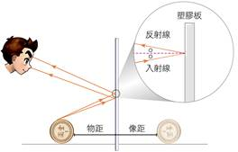
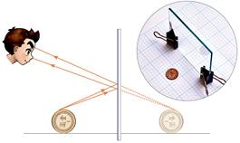
▲ 平面鏡成像實驗與對稱性
4-2 凸面鏡、凹面鏡與隨堂評量
焦點二：球面面鏡比較與實戰評量（第 1～2 題）
4. 凸面鏡與凹面鏡比較
| 面鏡種類 |
凸面鏡（反射面外凸） |
凹面鏡（反射面內凹） |
| 光學原理 |
凸面鏡會使光線發散 |
凹面鏡能使光線會聚於焦點 |
| 光徑示意圖 |
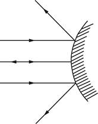
|
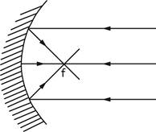
|
| 成像特性 |
必為正立、縮小、虛像
（視野比同尺寸平面鏡廣闊）
|
a. 物在焦點內：產生正立、放大的虛像。
b. 光源置於焦點上：反射後產生平行光束。
|
| 生活應用 |
汽車後照鏡、道路轉彎處反射鏡 |
手電筒反光罩、車頭燈、化妝鏡、太陽爐 |
隨堂實戰評量 (Q1～Q2)
(A) 物體均為發光體，可發出光線
(B) 物體可將光線完全反射
(C) 物體可將光線完全吸收
(D) 物體可發出光線或反射光線
【解析】視覺的產生是光線進入眼睛刺激視網膜。發光體（如太陽、燈泡）發射光線入眼，不發光的物體則反射周遭光線入眼，均能使我們看見物體。故選(D)。
(A) 10－A18
(B) 18A－10
(C) 10－A81
(D) 81A－10
【解析】平面鏡成像具有「左右相反、物與像對稱」的性質。將鏡中字樣「18A－01」作水平翻轉對稱：
- 最右側的「01」水平翻轉對稱後變成最左側的「10」；
- 中間的「－A」水平翻轉對稱後仍為「－A」；
- 最左側的「18」水平翻轉對稱後變成最右側的「81」；
綜合可得實際車牌號碼為「10－A81」。正確答案選 (C)。
4-2 隨堂實戰評量
凸面鏡視野與平面鏡成像視野分析（第 3～4 題）
(A) 物體經凸面鏡反射後的成像較大
(B) 物體經凸面鏡反射後的成像為實像
(C) 凸面鏡的成像範圍較大，視野較廣
(D) 遠處的物體可以成像
【解析】凸面鏡會使光線發散，所成的像恆為「正立、縮小的虛像」。因為像縮小，能將更大角度範圍的景物全部映入鏡中，成像範圍大、視野開闊，利於駕駛人看清轉角對向車況。故選(C)。
【解題視野畫法與解析】
解題方法（對稱像點與視野光徑法）：
1. 戊若要看到某人在鏡中的像，該人發出的光線經平面鏡反射後必須能射入戊的眼睛。
2. 根據光的可逆性，從「戊的眼睛位置」向「平面鏡的上下兩個端點」引兩條光線，此兩條光線依反射定律向鏡前反射所涵蓋的梯形區域，即為戊在鏡中看得到的物體範圍。
3. 由網格圖中觀察：丙的位置位於戊的左側且偏下方，丙發出射向鏡面兩端的光線反射後，光徑均偏向鏡面上方或遠離戊，無法到達戊的眼睛；亦即戊與平面鏡端點的連線區域無法涵蓋丙的像。因此戊看不到「丙」的像。正確答案選 (C)。
💡 幾何對稱速記法：在方格圖上，將鏡後戊的對稱像點 $E'$ 與鏡面兩端連線，若某人位於此連線向鏡前延伸的射線範圍之外，則戊便無法由鏡中看到該人！
4-3 光的折射
焦點一：折射成因、名詞光徑與快慢介質偏折規律
1. 光的折射定義與成因
(1) 光的折射：光進入不同介質時，由於光在不同介質內的傳播速率不同，前進方向在交界處發生偏折的現象，稱為折射。
(2) 垂直入射特例：光線若垂直界面入射（入射角 $= 0^\circ$），則行進方向不偏折（折射角 $= 0^\circ$），但光速依然改變。
2. 折射名詞定義與光路圖
• 法線：垂直兩介質交界面的參考直線。
• 入射線：射入界面的光線；折射線：進入另一介質後偏折的光線。
• 入射角：入射線與法線的夾角。
• 折射角：折射線與法線的夾角。
3. 快慢介質折射規律對照表
| 光的行進方向 |
由光速快的介質 入射 光速慢的介質
（例如：空氣 $\rightarrow$ 水 或 玻璃） |
由光速慢的介質 入射 光速快的介質
（例如：水 或 玻璃 $\rightarrow$ 空氣） |
| 光徑圖示 |
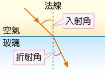
|
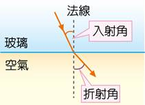
|
| 偏折結果 |
a. 前進方向偏向法線。
b. 折射角 ＜ 入射角。
|
a. 前進方向偏離法線。
b. 折射角 ＞ 入射角。
|
💡 折射黃金口訣：「快入慢，偏向法線角變小；慢入快，偏離法線角變大！」角度永遠與該介質中的光速成正比趨勢。
4-3 隨堂實戰評量（一）
折射生活現象與光路圖判斷（第 1～3 題）
(A) 星星位置不固定
(B) 光在不穩定氣流中折射
(C) 星星本身發光就是閃爍不定
(D) 觀察者眼睛的錯覺
【解析】大氣層中的空氣因溫度差異造成對流擾動，空氣密度不均勻且隨時變化，使遙遠星光進入大氣層時發生連續且微小的折射方向改變，產生忽亮忽暗的閃爍現象。故選(B)。
(A) 甲＞乙＞丙
(B) 乙＞甲＞丙
(C) 丙＞乙＞甲
(D) 甲＞丙＞乙
【解析】觀察光徑與法線夾角：
1. 光由甲進入乙時，光線「偏離法線」（折射角大於入射角），表示光速在乙中大於甲（$v_乙 > v_甲$）。
2. 光由乙進入丙時，光線「再次偏離法線」，折射角進一步增大，表示光速在丙中大於乙（$v_丙 > v_乙$）。
綜合可得光速大小關係為：丙 ＞ 乙 ＞ 甲。正確答案選 (C)。
【解析】人能看見水中的石頭，光線是由水中的石頭射出進入空氣中的眼睛（箭頭朝上出水面）；光由水（慢）射入空氣（快），折射線偏離法線（折射角大於入射角）。逆著折射光線看去，虛像位置比實際石頭更淺。合乎此光路者唯有 (C)。
4-3 隨堂實戰評量（二）
光跨介質物理量變化與偏折規律（第 4～5 題）
(A) 甲乙
(B) 乙丙丁
(C) 乙丁
(D) 甲丁戊
【詳細考點解析】
• (甲) 正確：光在空氣中速率約為 $3 \times 10^8\text{ m/s}$，進入水中降為約 $2.25 \times 10^8\text{ m/s}$，速率確實變慢。
• (丙) 錯誤：波動的「頻率」由最初發出光的波源決定，在穿透不同介質時頻率恆保持不變！
• (乙) 錯誤：依波動波速公式 $v = f \lambda$，頻率 $f$ 固定，光速 $v$ 減慢時，波長 $\lambda$ 應隨之變短。
• (丁) 正確：光線射抵不同介質的交界面時，絕大部分情況下均會同時發生一部分反射與一部分折射。
• (戊) 正確：反射部分的光線始終嚴格遵守反射定律，入射角必然等於反射角。
綜合以上分析，敘述正確者為 (甲)(丁)(戊)，正確答案選 (D)。
(A) 偏向法線，同時折射角＞入射角
(B) 偏向法線，同時折射角＜入射角
(C) 偏離法線，同時折射角＞入射角
(D) 偏離法線，同時折射角＜入射角
【偏折判斷精要】
【解析】光由光速較慢的介質進入較快的介質（例如：水 $\rightarrow$ 空氣 或 玻璃 $\rightarrow$ 空氣）：
1. 進入快介質後，光束邊緣加速前進，導致光線行進方向朝「偏離法線」的方向偏折；
2. 因為偏離法線，使得折射光線與法線之間的夾角增大，故「折射角 ＞ 入射角」。
正確選項為 (C)。
💡 舒展學習空間：本頁專注於光跨介質核心概念之深度剖析，完整保留詳盡推導步驟，無跨頁或截斷之疑慮。
4-3 隨堂實戰評量（三）
介質折射角度數據表與聲光特性對比（第 6～7 題）
(A) 乙＞丁＞丙＞甲
(B) 丁＞丙＞甲＞乙
(C) 乙＞甲＞丙＞丁
(D) 丙＞乙＞甲＞丁
| 介質 | 甲 | 乙 | 丙 | 丁 |
|---|
| 入射角 | $30^\circ$ | $30^\circ$ | $30^\circ$ | $30^\circ$ |
| 折射角 | $50^\circ$ | $70^\circ$ | $30^\circ$ | $15^\circ$ |
【數據比較與解析】
【解析】入射角均固定為 $30^\circ$。在光的折射現象中，折射角的大小與光在該介質中的速率成正相關趨勢（介質內光速越快，與法線之夾角越大）：
• 介質乙折射角為 $70^\circ$（最大），表示光在乙中的速度最快；
• 介質甲折射角為 $50^\circ$（次大）；
• 介質丙折射角為 $30^\circ$（折射角等於入射角，光速與原介質相同）；
• 介質丁折射角為 $15^\circ$（最小，光速最慢）。
因此四種介質中光速大小順序為：乙 ＞ 甲 ＞ 丙 ＞ 丁。正確答案選 (C)。
(A) 兩者均需介質才能傳播
(B) 兩者在空氣、水、玻璃等介質中的傳播速率，均為空氣＞水＞玻璃
(C) 我們會先看見閃電再聽到雷聲，是因為閃電先產生
(D) 兩者遇到障礙物都會發生反射
【聲波與光波綜合對比解析】
• (A) 錯誤：聲波是力學波，傳播需要介質；光波是電磁波，在真空中也能傳播。
• (B) 錯誤：聲速傳播快慢為「固體 ＞ 液體 ＞ 氣體」（玻璃 ＞ 水 ＞ 空氣）；光速則剛好相反，為「真空中 ＞ 空氣 ＞ 水 ＞ 玻璃」。
• (C) 錯誤：閃電與雷聲是同時伴隨發生的，我們先看到閃電是因為空氣中光速（約 $3 \times 10^8\text{ m/s}$）遠大於聲速（約 $340\text{ m/s}$）。
• (D) 正確：聲波與光波都具有波動特性，遇到物體表面或介質障礙時均會發生反射。故選(D)。
💡 大考叮嚀：「聲速固體最快真空為零；光速真空最快固體最慢！」兩者剛好完全相反，考前務必多次強化記憶。
4-4 透鏡成像
焦點一：透鏡折射現象與凸/凹透鏡成像性質
1. 透鏡的折射現象與焦點
(1) 凸透鏡（會聚透鏡）：平行雷射光經凸透鏡折射後，在鏡後會聚於一點，稱為焦點，因此凸透鏡又稱為會聚透鏡；焦點與透鏡中心的距離稱為焦距（$f$）。
(2) 凹透鏡（發散透鏡）：平行雷射光經凹透鏡折射會發散，折射後光線的反向延長線在鏡前交會於一點，稱為焦點（虛焦點），因此凹透鏡又稱為發散透鏡。
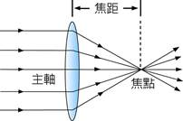
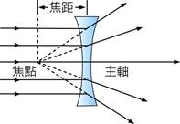
▲ 凸透鏡與凹透鏡折射路徑
2. 凸透鏡成像性質（重要總表與綜合光路）
| 物體位置 |
成像位置 |
像的性質 |
生活應用 |
| ① $2f$ 外 |
①' $f \sim 2f$ 內（異側） |
倒立縮小 實像 |
照相機、眼球成像 |
| ② $2f$ 上 |
②' $2f$ 上（異側） |
倒立等大 實像 |
等大影印機 |
| ③ $f \sim 2f$ 內 |
③' $2f$ 外（異側） |
倒立放大 實像 |
投影機、幻燈機 |
| ④ 焦點上 ($f$) |
④' 無窮遠 |
無法成像（平行光束） |
手電筒、探照燈 |
| ⑤ 焦點內 ($< f$) |
⑤' 鏡前物後（同側） |
正立放大 虛像 |
放大鏡 |
3. 凹透鏡成像性質
• 任意物距：物體置於凹透鏡前任意位置，所成的像恆位於鏡前焦點內（與物同側），成像性質必為正立縮小 虛像。
• 生活應用：近視眼鏡、大門防盜貓眼。
4-4 生活中的透鏡與視力矯正
焦點二：照相機、放大鏡、眼睛結構與近視/遠視矯正
4. 生活中的常見透鏡工具
(1) 放大鏡：將物體置於凸透鏡的焦距內（$p < f$），透過透鏡可在物體同側觀察到正立放大 虛像。
(2) 照相機：鏡頭為凸透鏡組，景物置於鏡頭兩倍焦距外（$p > 2f$），光線經折射後落在後方感光元件（如底片或CCD/CMOS）上，形成清晰的倒立縮小 實像。
5. 眼睛結構與近視、遠視矯正成因對照表
| 眼部狀況 |
近視眼 |
遠視眼 或 老花眼 |
| 形成原因 |
眼球前後徑過長，或水晶體焦距過短（折射過強） |
眼球前後徑過短，或水晶體焦距過長（折射不足） |
| 未矯正成像情形 |
遠處物體成像於視網膜之前 |
近處物體成像於視網膜之後 |
| 未矯正圖解 |
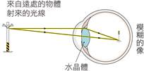
|
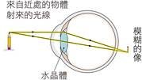
|
| 視力矯正方式 |
配戴凹透鏡（先發散光線後再入眼） |
配戴凸透鏡（先會聚光線後再入眼） |
| 矯正後光路圖 |
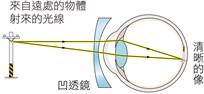
|
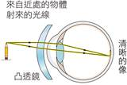
|
💡 速記口訣：「近視晶焦短像在前，配戴凹鏡做發散；遠視晶焦長像在後，配戴凸鏡助會聚！」
4-4 隨堂實戰評量（一）
透鏡外形判斷與成像移動特性（第 1～4 題）
【解析】矯正近視需使用具有發散光線功能的「凹透鏡」（中間薄、邊緣厚）。(A)雙凸、(B)平凸、(D)凹凸（中間仍較厚）皆屬凸透鏡；(C)中間比兩端薄，為雙凹透鏡，可用於近視矯正。故選(C)。
(A) 平面鏡
(B) 凹透鏡
(C) 凸透鏡
(D) 凹面鏡
【解析】光線穿透鏡面進入另一側介質，且折射後的光線向中心主軸靠攏偏折（產生會聚效果），故為凸透鏡（會聚透鏡）。選(C)。
(A) 凸透鏡，因為能發散光線
(B) 凸透鏡，因為能會聚光線
(C) 凹透鏡，因為能發散光線
(D) 凹透鏡，因為能會聚光線
【解析】放大鏡由凸透鏡製成，能會聚光線；當物體置於焦點內時，可折射出正立放大的虛像。故選(B)。
(A) 屏幕上的實像逐漸變小
(B) 屏幕上的實像逐漸變大
(C) 成像屏幕的移動方向與物體移動方向相反
(D) 眼睛透過透鏡，所看到遙遠處的物體為一正立虛像
【解析】凸透鏡成像規律：「物近像遠像變大」。物體由無窮遠處朝焦點靠近時，鏡後的實像會由焦點附近逐漸向外遠離透鏡，且實像尺寸持續放大。故選(B)。
4-4 隨堂實戰評量（二）
凹透鏡成像、眼睛配鏡與焦點內虛像（第 5～7 題）
(A) 成像由倒立的像逐漸轉為正立的像
(B) 像會消失
(C) 整個過程中所成的像皆為虛像
(D) 成像的位置皆在凹透鏡的左方
【凹透鏡成像特點解析】
【解析】凹透鏡對光線具有發散作用：
1. 無論物體置於凹透鏡前的任何距離，折射後的發散光線反向延長，所成的像「恆為正立、縮小的虛像」；
2. 成像位置永遠在鏡前焦點之內，且與物體在同一側（本題物體在透鏡右方，則像必在透鏡右方）。
因此移動過程中整個過程所成的像皆為虛像。正確選項為 (C)。
(A) 將凹透鏡戴於正常眼睛上，則所生的像映在視網膜後
(B) 某同學所戴的眼鏡是凹透鏡，那麼他是遠視眼患者
(C) 近視眼的人由於水晶體焦距太短，因此成像在視網膜後方
(D) 近視眼的人所戴的眼鏡是凸透鏡
【視力缺陷與配鏡解析】
• (A) 正確：正常眼睛成像恰在視網膜上；若配戴凹透鏡，因光線先被發散，聚焦位置延後，像會落在視網膜後方。
• (B) 錯誤：配戴凹透鏡者是「近視眼」患者。
• (C) 錯誤：近視眼水晶體焦距太短，折射力太強，成像在視網膜「前方」。
• (D) 錯誤：近視眼應配戴「凹透鏡」矯正。故選(A)。
(A) 正立放大實像
(B) 正立放大虛像
(C) 倒立縮小實像
(D) 倒立放大實像
【解析】物體置於凸透鏡焦點內（$p < f$），折射光線為發散光無法會聚成實像；人眼逆著發散光線觀察，接收到的是反向延長線在物體同側交會形成的「正立、放大虛像」（放大鏡成像原理）。故選(B)。
4-4 隨堂實戰評量（三）
放大鏡字體辨別、近視診斷與凸透鏡光徑（第 8～10 題）
(A) 焦距大於 8 公分的凸透鏡
(B) 焦距小於 8 公分的凸透鏡
(C) 焦距大於 8 公分的凹透鏡
(D) 焦距小於 8 公分的凹透鏡
【觀察判斷與推導】
【解析】由圖中可清晰觀察到紙上的印刷字體呈現「正立且放大」的效果：
1. 只有「凸透鏡」在物距小於焦距時能產生正立放大虛像（凹透鏡永遠只能形成正立縮小像）；
2. 此時透鏡與紙的距離為物距 $p = 8\text{ 公分}$，欲形成正立放大虛像，物距必須小於焦距（$p < f$）；
3. 因此該透鏡的焦距必大於 8 公分（$f > 8\text{ cm}$）。正確答案選 (A)。
(A) 水晶體的焦距過短
(B) 看不清楚遠處的物體
(C) 遠處物體成像在視網膜後方
(D) 要配戴凹透鏡矯正
【解析】(C)錯誤。近視眼是因為水晶體焦距過短（或眼球前後徑太長），導致來自遠處物體的平行光經折射後聚焦點落在「視網膜的前方」，投射在視網膜上時是發散模糊的光斑。故選(C)。
【解析】平行於凸透鏡主軸的入射光線，經凸透鏡折射後，折射光線必定會偏折通過透鏡後方主軸上的焦點（即圖中之光路「丁」）。故選(D)。
4-5 色散與顏色
焦點一：色散現象、光的三原色與物體呈色原理
1. 色散現象與三稜鏡折射
(1) 色散定義：太陽光（白光）經介質（如三稜鏡）折射後分散成各種色光的現象，稱為色散。
(2) 成因分析：白光由多種不同顏色的光混合而成。不同色光在玻璃介質中的傳播速率不同（紅光最快、紫光最慢），因而折射率不同（紅光偏折角最小、紫光偏折角最大），在白紙屏上散開形成紅、橙、黃、綠、藍、靛、紫之連續光譜。
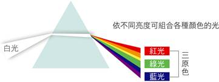
▲ 牛頓三稜鏡色散實驗
2. 光的三原色（加色法混合）
(1) 光的三原色：紅（R）、綠（G）、藍（B）三種色光。
(2) 色光疊加規律：
• 紅光 ＋ 綠光 ＝ 黃光
• 紅光 ＋ 藍光 ＝ 洋紅光（紫紅）
• 綠光 ＋ 藍光 ＝ 青光（藍綠）
• 紅光 ＋ 綠光 ＋ 藍光 ＝ 白光
(3) 生活應用：彩色電視、手機與電腦螢幕，均是由三原色微小發光點依不同強度組合呈現多彩世界。
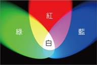
▲ 光的三原色重疊加色法
3. 物體的顏色成因
(1) 透明物體的顏色：由其能「透射」的色光決定，其餘色光則被介質吸收。例如：紅色透明玻璃只讓紅光穿透，其餘色光被阻擋吸收。
(2) 不透明物體的顏色：由其表面能「反射」的色光決定，其餘色光被吸收。
• 白色物體：能反射照射其上的所有色光。
• 黑色物體：吸收所有照射其上的色光，不反射任何色光入眼。
💡 呈色核心心法：透明看「透射」，不透明看「反射」；沒有光進眼睛就是「黑」！
4-5 隨堂實戰評量（一）
濾光透射與色光照射紙片呈色分析（第 1～2 題）
(A) 黑色
(B) 白色
(C) 藍色
(D) 綠色
【光路逐步透射解析】
1. 白牆反射白光（由紅光、綠光、藍光等複色光混合而成）；
2. 白光射入第一層藍色玻璃紙時，藍色玻璃紙只允許「藍光」穿透，吸收紅光與綠光；
3. 穿出的藍光接著射向第二層綠色玻璃紙，綠色玻璃紙只允許「綠光」穿透而會吸收藍光；
4. 因此穿過兩層玻璃紙後，沒有任何色光能夠到達人眼，大腦感知為無光刺激，故白牆呈現黑色。
正確答案選 (A)。
(A) 紅、綠、藍
(B) 白、紅、藍
(C) 白、黑、藍
(D) 白、藍、紅
【表格推導分析】
• 判斷紙片甲：紅光照射下反射紅光呈紅色、綠光照射下反射綠光呈綠色，表示甲紙能同時反射紅、綠等各色光，故甲紙為白色。
• 判斷紙片乙：紅光照射下反射紅光呈紅色、綠光照射下吸收綠光呈黑色，表示乙紙只反射紅光，故乙紙為紅色。
• 判斷紙片丙：紅光照射呈黑、綠光照射亦呈黑，吸收紅綠光；題目明確指出三張中有一張為藍色，藍色紙在紅光與綠光照射下均無法反射，恰呈現黑色，故丙紙為藍色。
綜合結論，甲、乙、丙三張紙顏色依序為：白、紅、藍。故選(B)。
💡 解題口訣：「照射單色光時，白紙現該光色，黑紙恆為黑，同色紙現原色，異色紙變黑！」
4-5 隨堂實戰評量（二）
色光照射面積比例計算與濾光透射（第 3～4 題）
(A) 1：1
(B) 3：7
(C) 4：6
(D) 8：2
【計算過程與呈色解析】
1. 各色塊在單色「藍光」照射下的反射情形：
• 白色色塊（10%）：可反射所有色光，受到藍光照射時反射藍光，呈現藍色（10%）。
• 紅色色塊（20%）：只反射紅光，吸收藍光，呈現黑色（20%）。
• 綠色色塊（30%）：只反射綠光，吸收藍光，呈現黑色（30%）。
• 藍色色塊（40%）：反射藍光，呈現藍色（40%）。
2. 統計總面積：
• 藍色總面積：$10\% + 40\% = 50\%$
• 黑色總面積：$20\% + 30\% = 50\%$
3. 藍黑面積比：$50\% : 50\% = 1 : 1$。故正確答案選 (A)。
【解析】紅色透明玻璃片具有只讓紅光透射、吸收綠光與藍光的濾光特性：
1. 白光射入時，白光中的紅光能穿透出來，其餘色光被吸收；
2. 紅光射入時，能完全透射；
3. 綠光與藍光射入時，均被紅色玻璃吸收而無法穿透（圖中呈虛線）。
比對各圖，符合此光學特徵者唯有 (C)。故選(C)。
💡 彩色濾光片生活應用：攝影鏡頭前加裝的偏光鏡與色彩濾鏡，以及舞台燈光投射多彩氛圍，均是運用透明介質選擇性透射特定色光的原理！
第 4 章 重點整理（一）
4-1 光的傳播 ～ 4-3 光的折射 核心整合填空
考前快速盤點與概念複習
4-1 光的傳播
1. 太陽、通電的燈泡和燭火等能自行發光的物體，稱為發光體或光源，當光源發出的光線進入眼睛會使我們產生視覺。
2. 光在真空中或均勻介質中以直線前進，稱為光的直進性。
3. 因為光的直進性，三色LED燈光在通過針孔後，會在針孔後的紙屏上，呈現上下顛倒、左右相反的像。
4. 由光源發出的真實光線所構成的像，稱為實像。
5. 各介質光速快慢比較：真空中 ＞ 空氣中 ＞ 水中 ＞ 玻璃中。
4-2 光的反射與面鏡成像
1. 不會發光的物體，需將光線反射進入眼睛，我們才能看見物體。
2. 反射定律：(1) 入射光線、反射光線分別在法線兩側，且此三直線在同一平面上；(2) 入射角等於反射角。
3. 平面鏡成像並非由實際光線會聚而成，不能投射至白紙或屏幕上，只能用眼睛看到，此成像稱為虛像。
4. 凸面鏡會形成正立縮小的虛像；距離凹面鏡不遠處的物體，則會形成正立放大的虛像。
4-3 光的折射
1. 折射：光進入不同介質時，由於光速改變，前進方向在交界處發生偏折的現象。
2. 光線在不同介質中的傳播偏折情形：
| 情形路徑 |
介質速度變化 |
偏折方向 |
角度大小關係 |
| 空氣 $
ightarrow$ 玻璃 |
光速變慢 |
偏向法線 |
折射角 ＜ 入射角 |
| 玻璃 $
ightarrow$ 空氣 |
光速變快 |
偏離法線 |
折射角 ＞ 入射角 |
第 4 章 重點整理（二）
4-4 透鏡成像 ～ 4-5 色散與顏色 核心整合填空
考前關鍵速記與全章總結
4-4 透鏡成像與視力矯正
1. 平行雷射光經凸透鏡折射，在鏡後會聚於一點，此點稱為焦點，因此凸透鏡又稱為會聚透鏡；焦點與透鏡中心的距離稱為焦距。
2. 平行雷射光經凹透鏡折射，會使得光線發散，因此凹透鏡又稱為發散透鏡，折射後各光線往反方向的延長線仍會在凹透鏡前相交於一點，此點亦稱為焦點。
3. 物體在凸透鏡前的成像情形速記：
| 物體位置 |
成像性質 |
| 兩倍焦距外 ($p > 2f$) |
倒立縮小 實像 |
| 一至兩倍焦距間 ($f < p < 2f$) |
倒立放大 實像 |
| 焦點內 ($p < f$) |
正立放大 虛像 |
4. 透過凹透鏡所見到的像總是正立縮小的虛像。
5. 患有近視的人，需配戴凹透鏡矯正；而遠視的人，則需配戴凸透鏡矯正。
4-5 色散與顏色
1. 光線經物體折射後，分散成各種顏色光線的現象，稱為色散。
2. 各種顏色的光，可用紅、綠、藍三種色光，依不同的亮度比例組合產生，因此稱它們為光的三原色。
3. 若物體可以反射各種色光，此物體將呈現白色；若物體吸收各種色光，不反射任何色光，則此物體將呈現黑色。
🎯 滿分學習建議：
凸透鏡成像以「$2f$」與「$f$」為兩大分界點——$2f$ 是實像縮小與放大的分界點，$f$ 是實像（倒立）與虛像（正立）的分界點！熟記這兩大關鍵點，光學題目迎刃而解！